| < | > |
| the house of Manuel de Falla | [2006-04-17 09:45] |
|
welcome to the house of Manuel de Falla in Granada 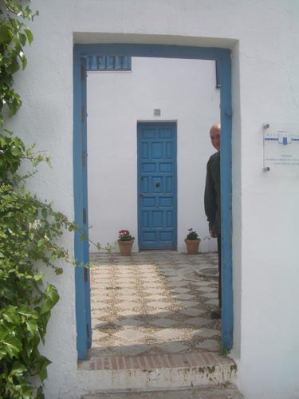 here's where he slept 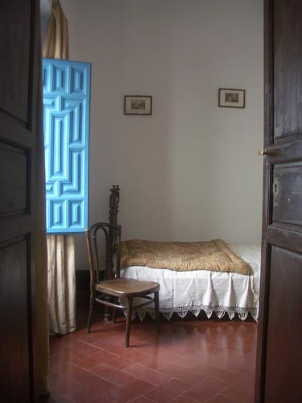 here's where he played the piano 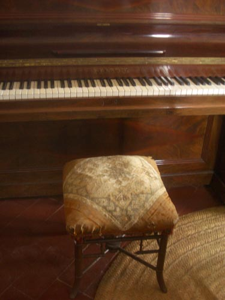 here's how he kept in touch with his friends 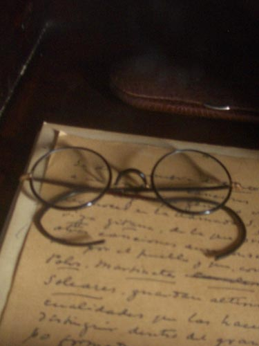 on the left is the door to the bomb shelter - on the right is a homemade wheelchair which he used because he believed he had cancer of the legs 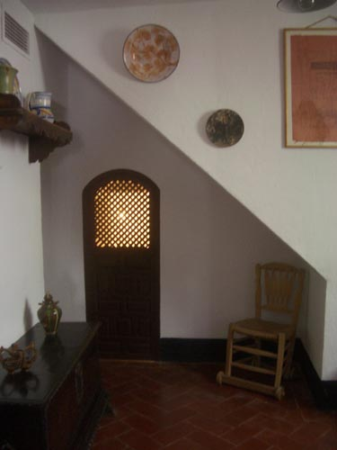 there were plenty of medicines in the bedroom 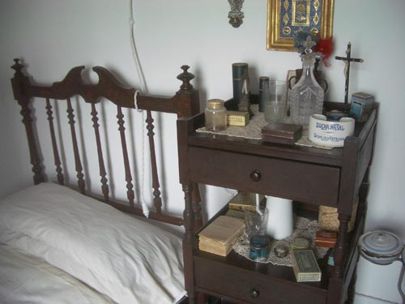 from the front room you can see slowly climbing feet 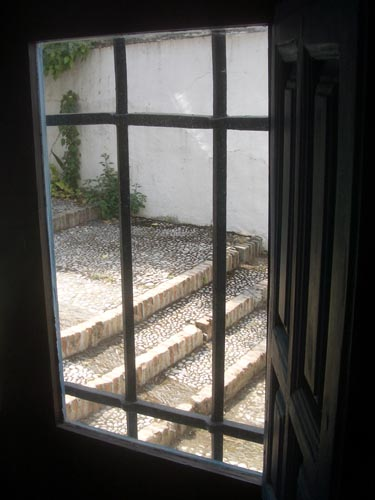 from upstairs you can watch swallows racing over the city 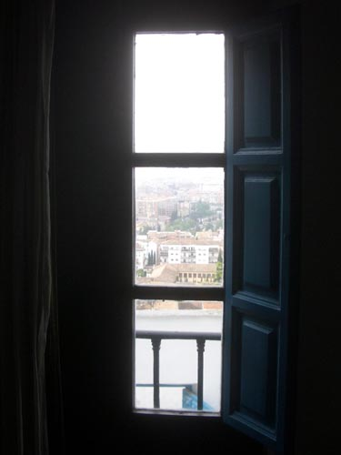 this was a present from Lorca 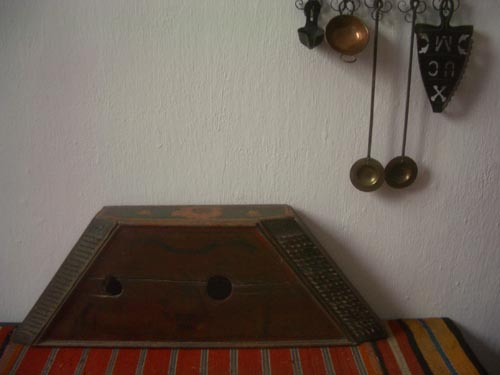 one day Manuel de Falla went on a journey to Argentina 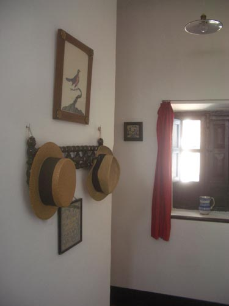 and never came back 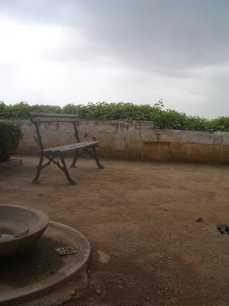 |
|